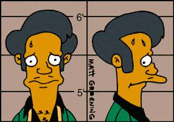
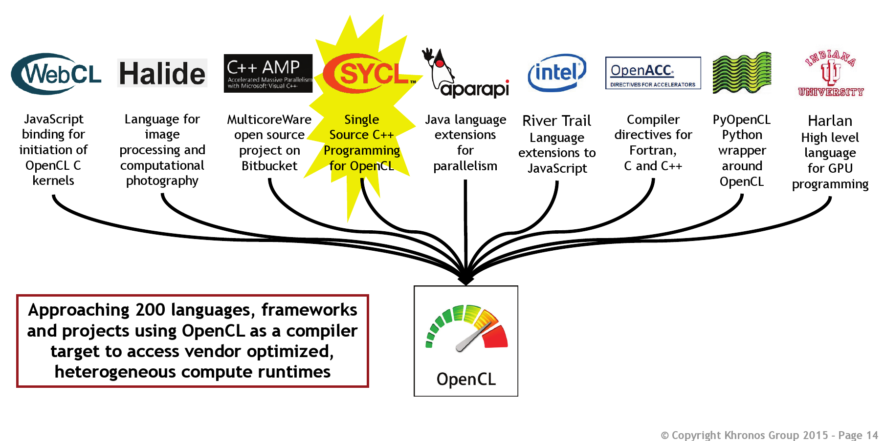

C++ on GPUs done right?
Peter Steinbach
steinbac@mpi-cbg.de
Meeting C++, December 05, 2015
Disclaimer(s)
No OpenGL/Vulkan here!


This is Open-Source!
Feel free to reply, discuss, inform, correct, ...
github.com/psteinb/meetingcpp2015
If not stated otherwise, the slides and all it's code are licensed under
Creative Commons Attribution 4.0 International LicenseWho am I?

Scientific Software Engineer at Max Planck Institute of Molecular Cell Biology and Genetics
- Dresden, Saxony
- 450 staff
- founded 2001
- cell biology
- genomics
- systems biology
What do I do?
Accelerating scientific algorithms on GPUs (multi-GB dataset, a lot of FFTs)
Outline
Massively Parallel Programming
Architecture
What can you use today
- What can you use tomorrow
Massively Parallel Programming
Yet Another Hype?
Data obtained from Top500.org
Vendor Options
Nvidia Tesla
AMD FirePro
Intel MIC
Vendor flag ships
- 2x GK210 chipsets
- 2x 12 GB GDDR5
- 2x 288 GB/s to RAM
- 8.7 TFlops SP
- 2.9 TFlops DP
- 1x Grenada XT
- 32 GB GDDR5 RAM
- 320 GB/s to RAM
- 5.2 TFlops SP
- 2.6 TFlops DP
- 62x x86 CPUs
- 8 GB GDDR5 RAM
- 320 GB/s to RAM
- 2.1 TFlops SP
- 1.1 TFlops DP
Architecture
Food Hunt

(fast, single, versatile)

(small, many, use wakefield of neighbor)
The same principle on die

A more in-depth look
Kepler SMX Close-up
SIMT Execution
Warp
- smallest unit of concurrency: 32 threads
- thread = single CUDA core
- all threads execute same program
Block
- can synchronize (barriers)
- can exchange data (common "shared" memory, etc.)
Grid
- grids/blocks serve as work distribution/sharing mechanism on device (occupancy)
- blocks dispatched to SMX (in turn run warps)
Hiding Memory Latency
-
global memory access: 200-400 ticks per warp
fp32 add/mul/fma: 32 per tick per warp
- hide (memory) latency by pipelining active warps
Compute > Memory Access
device kernels
arithmetic complexity needs to be high
number of arithmetic operations > number of load/store operations
Data Locality
Keep data put as long as possible!
Memory Access
Bad: Non-Coalesced Memory Access
- every thread accesses different cache line at random
- warp has to be replayed 31 times to complete 1 instruction
Good: Coalesced Memory Access
Summary Architecture
GPUs are complicated beasts
massive parallel compute power (per Watt)
- massive ways to kill performance
What can you use today?
A Word of Warning!

32 threads is the minimum
- good tools are rare and almost never portable
Use a Library!
Use Libraries!
Baseline Example
void vector_sum(std::vector<float>& a,
float scale, const std::vector<float>& b) {
for (int i=0; i<a.size(); i++)
a[i] = a[i] * scale + b[i];
}CUDA Overview
(Nvidia CUDA Zone)

freeware tool suite, gpu library package and low/high level API(s)
CUDA platform supports C and C++ with proprietary compiler
binaries run on Nvidia hardware only
source code split into host and device part
host : C++11 and STL supported
device: tiny subset of C++11
(no exceptions, no iostream, no virtual inheritance, no STL)
5 Simple Steps In CUDA
- Declare and allocate host and device memory.
- Initialize host data.
- Transfer data from the host to the device.
- Execute one or more kernels (vector sum).
- Transfer results from the device to the host.
CUDA Code: Mem Init
int main(/*..*/){//..
std::vector<float> host_a(vsize,1.f);
std::vector<float> host_b(vsize,2.f);
float * device_a=nullptr, *device_b=nullptr;
cudaMalloc(&device_a, vsize_byte);
cudaMalloc(&device_b, vsize_byte);
cudaMemcpy(device_a, &host_a[0], vsize_byte,
cudaMemcpyHostToDevice);
cudaMemcpy(device_b, &host_b[0], vsize_byte,
cudaMemcpyHostToDevice);CUDA Code: Compute
//above main
__global__ void vector_sum(std::size_t _size,
float _scale, float* _a, float* _b){
std::size_t index = blockIdx.x*blockDim.x + threadIdx.x;
if (index < _size)
_a[index] = _scale*_a[index] + _b[index];
}
//in main: dispatch to device
vector_sum<<<(vsize+255)/256, 256>>>(vsize,
host_d,
device_a,
device_b);CUDA Code: Mem TX + Clean-up
//transfer memory back
cudaMemcpy(&host_a[0], device_a, vsize_byte,
cudaMemcpyDeviceToHost);
//clean-up
cudaFree(device_a);
cudaFree(device_b);
return 0;
}
CUDA Wrap-up
free and working
CUDA comes with a ton of tools
(debugger, profiler, libraries, ...)CUDA comes with a ton of examples
very flexible (device instrinsics, locked memory handling, ...)
nVidia very active in porting scientific applications
nVidia very active C++ standardisation (Parallelism TS)
plain C API
(memory allocation, error handling, asynchronous calls, ...)grid dispatch is error prone
(code repetition in index calculation)compiler is sometimes hard to come by (using boost, OpenMP interoperability)
__keyword__disrupt design (redundancy, maintainability)
CUDA is like ...
OpenCL
(khronos.org/opencl)
open, royalty-free standard for cross-platform, parallel programming
designed to run on CPUs, GPUs, FPGAs, DSPs, ...
maintained by non-profit technology consortium Khronos Group
source code split into host and device part
host : C/C++ based API (lower level than CUDA)
device: C11 derived language (OpenCL 2.0)
OpenCL Kernel
const char *kernelSource = "\n" \
"__kernel void vecAdd( __global float *a, \n" \
" __global float *b, \n" \
" __global float *c, \n" \
" const unsigned int n) \n" \
"{ \n" \
" int id = get_global_id(0); \n" \
" \n" \
" //Make sure we do not go out of bounds \n" \
" if (id < n) \n" \
" c[id] = a[id] + b[id]; \n" \
"} \n" \
"\n" ;OpenCL is like ...
thrust
open source (Apache v2 license)
interoperability with CUDA, TBB and OpenMP (possible backends)
- high level interface compared to CUDA/OpenCL
thrust Code: Functor
struct saxpy_functor :
public thrust::binary_function<float,float,float>
{
const float a;
saxpy_functor(float _a) : a(_a) {}
__host__ __device__
float operator()(const float& x,
const float& y
) const {
return a * x + y;
}
};thrust Code: GPU dispatch
int main(//...){//..
thrust::host_vector<float> host_a(N,1.f);
thrust::host_vector<float> host_b(N,2.f);
thrust::device_vector<float> dev_a = host_a;
thrust::device_vector<float> dev_b = host_b;
thrust::transform(dev_a.begin(),dev_a.end(),
dev_b.begin(),
dev_a.begin(),
saxpy_functor(scale));
}thrust Wrap-up
C++ and STL for GPUs (and CPUs)!
container and algorithm API well thought through
code becomes readable/maintainable (at least for a C++Dev)
algorithms can be dispatched from device kernels as well
- many examples, active community
loss of flexibility:
host-device i/o (pinned memory allocator considered experimental)
index information only available through kernel built-ins
grid distpatch of kernel by thrust library (occupancy)
kernel optimisations = CUDA
(CUB library?)- C++11, C++17 ?
thrust is like ...
HCC
(bitbucket.org/multicoreware/hcc)

All-purpose GPUs
single source C++ compiler (for CPU, GPU and APU targets)
supports C++AMP 1.2, HC, OpenMP 4, C++1x
currently being ported to discrete GPUs
- very young project presented in Kona
HCC Vector Sum (C++AMP)
using namespace concurrency;
void amp_sum(vector<float>& _va,
const vector<float>& _vb,
float _scale){
extent<1> ext_a(_va.size()),ext_b(_vb.size());
array_view<float, 1> view_a(ext_a,_va);
array_view<const float, 1> view_b(ext_b,_vb); HCC continued
parallel_for_each(view_a.get_extent(),
[=](index<1> idx) restrict(amp)
{
view_a[idx] = view_a[idx]*_scale + view_b[idx];
}
);
view_a.synchronize();
}HCC Wrap-up
API focusses on problem-solving and flexibility
API appears to be lightweight (array views)
multiple binary backends (SPIR-V, OpenCL, ...)
multiple hardware backends (CPU, GPU, APU)
homogenous C++ source code
function continuations supported
future1.then(future2)//..
young project, API still fluid (
concurrency::=>hc::)no tooling yet (debugger, profiler, ...)
performance yield unclear
combined API for integrated and discrete GPUs
HSA/AMD road map unclear
HC is like ...
{kind=link}
Pragma based approaches
(openmp.org)
void vector_sum(int size, float scale,
float * restrict a, float * restrict b) {
#pragma omp target map(to:b[0:n], size, scale) map(a[0:n])
{
#pragma omp parallel for
for (int i=0; i<size; i++) {
a[i] = a[i] * scale + b[i];
}
}
}Pragmas continued
(openacc.org)
void vector_sum(int size, float scale, float *a, float *b) {
#pragma acc parallel copy(a[0:size]) copyin(b[0:size])
#pragma acc loop
for (int i = 0; i < size; ++i)
a[i] = scale*a[i] + b[i];
}fully in pgi & ENZO2016 compiler)
Pragma Wrap-up
OpenMP is (already) a success story
(why not OpenACC as well)dream: one-line injection and code is fast
strong industrial support (tooling)
GPU: perfect fit for upgrading legacy code or prototyping
OpenMP works well on shared memory CPUs
(discrete) GPUs have different architecture than CPUs
language in a language ??
OpenACC, OpenMP dichotomy (will users/applications loose?)
Pragmas are like ...
by Alno
{kind=link}
What can you use tomorrow
Boost.Compute
not yet part of boost library
OpenCL wrapper enabling vendor independent parallel algorithms
- conceptually very similar to thrust/bolt
compute::device gpu = compute::system::default_device();
compute::context ctx(gpu);
compute::command_queue queue(ctx, gpu);
compute::vector<float> device_a(a.size(), ctx);//etc..
compute::copy(host_a.begin(), host_a.end(),
device_a.begin(), queue);//etc..
compute::transform(device_a.begin(),device_a.end(),
device_a.begin(),compute::add<float>(),queue);OpenCL tomorrow

from SIGGRAPH Asia 11/2015
CUDA tomorrow
vector_sum<<<(vsize+255)/256, 256>>>(/*..*/);
launch(vector_sum, /*..*/);auto f1 = bulk_async(par(n), [=](parallel_agent &self)
{
int i = self.index();
z[i] = a * x[i] + y[i];
});
auto f2 = bulk_then(f1, par(n), other_work);
auto f3 = bulk_then(f1, par(n), more_work);
when_all(f2, f3).wait();C++17
Published already:
Parallelism TS, Concurrency TStransform( std::experimental::parallel::par,
std::begin(a), std::end(a),
std::begin(b),
std::begin(a)
[&](float& a, const float& b) {
a = scale*a + b;
});vendors plan to support this with
std::parallel::cuda, std::parallel::openclMy C++17 GPU excitement
future<int> f1 = copy_to_device();
future<int> f2 = f1.then([](future<int> f) {
future<int> f3 = start_compute();
return f3;
});
future<int> f3 = f3.then([](future<int> f){
return copy_to_host();
}
);taken from concurrency TS
better API to coordinate asynchronous transfers and computations
future: use
(a)wait/thenand friends to express data dependencies- support by compiler vendors needed
Summary
C++ on GPUs done right?
in production: almost dominated by C99
on the horizon: performant, flexible and maintainable C++ APIs emerging
GPUs are there to stay
GPUs today convert workstations to compute clusters, and clusters to supercomputers!
GPUs architecture is complex: obtaining max. performance challenging
- accelerators are a must on the road to exascale/performance
Acknowledgements
Robert Haase, Ian Henry, Benoit Lombardot, Jeff Oegema
Guido Juckeland, Thomas Karnagel, René Widera, Erik Zenker
Greg Stoner, Ben Sander, Chan SiuChi; Jack Chung
Axel Köhler
Thank you!
For Questions, Comments, Complaints, Compliments, ...
github.com/psteinb/meetingcpp2015Links
| https://isocpp.org | |
| 5 Simple Steps In CUDA | http://devblogs.nvidia.com/parallelforall/easy-introduction-cuda-c-and-c/ |
| AMD | http://amd.com/ |
| Alno | https://commons.wikimedia.org/wiki/File:Ukulele-electro-acoustic.JPG |
| Alpaka | https://github.com/ComputationalRadiationPhysics/alpaka |
| ArrayFire | https://github.com/arrayfire/arrayfire |
| Boost.Compute | https://github.com/boostorg/compute |
| CUB | https://nvlabs.github.io/cub/ |
Links 2/7
| CUDA | https://developer.nvidia.com/gpu-accelerated-libraries |
| Caffe | http://caffe.berkeleyvision.org/ |
| Concurrency TS | https://github.com/cplusplus/concurrency-ts |
| Creative Commons Attribution 4.0 International License | http://creativecommons.org/licenses/by/4.0/ |
| ENZO2016 | http://www.pathscale.com/enzo |
| Ffmpeg | http://ffmpeg.org/ |
| GPU Center of Excellence | http://ccoe-dresden.de/ |
| GPUs | https://github.com/psteinb/gtc2015.git |
Links 3/7
| Kasra Ganjavi | https://en.wikipedia.org/wiki/File:Andy_McKee,January2008.jpg |
| Kepler | http://docs.nvidia.com/cuda/cuda-c-programming-guide/index.html#multiprocessor-level |
| Khronos Group | https://www.khronos.org/news/logos/ |
| MPI CBG | http://www.mpi-cbg.de |
| Multicoreware | http://www.multicorewareinc.com/ |
| Museum of Making Music at English Wikipedia | https://commons.wikimedia.org/wiki/File:Elektrofryingpan.jpg |
| Nvidia CUDA Zone | https://developer.nvidia.com/cuda-zone |
| OpenCL | http://developer.amd.com/tools-and-sdks/opencl-zone/acl-amd-compute-libraries/ |
Links 4/7
| OpenCL 2.0 | https://www.khronos.org/registry/cl/sdk/2.0/docs/OpenCL-2.0-refcard.pdf |
| OpenCV | http://opencv.org/ |
| Parallelism TS | https://github.com/cplusplus/parallelism-ts |
| SIGGRAPH Asia 11/2015 | https://www.khronos.org/assets/uploads/developers/library/2015-sigasia/SIGGRAPH-Asia_Nov15.pdf |
| Scionics Computer Innovations GmbH | www.scionics.de |
| SeqAn | http://www.seqan.de/ |
| Top500.org | www.Top500.org |
| Torch | http://torch.ch/ |
Links 5/7
| VexCL | https://github.com/ddemidov/vexcl |
| ViennaCL | http://viennacl.sourceforge.net/ |
| What can you use tomorrow | http://bloggerspath.com/5-cool-unusual-gadgets-to-observe-the-future/ |
| agency | https://github.com/jaredhoberock/agency |
| axeplace.com | http://axepalace.com/media/catalog/product/cache/1/image/9df78eab33525d08d6e5fb8d27136e95/d/v/dv020_jpg_jumbo_h70433.001_black_flat3.jpg |
| bitbucket.org/multicoreware/hcc | https://bitbucket.org/multicoreware/hcc/wiki/Home |
| gcc 5.0+ | https://gcc.gnu.org/wiki/Offloading |
| github.com/psteinb/meetingcpp2015 | https://github.com/psteinb/meetingcpp2015 |
Links 6/7
| icc 16+ | https://software.intel.com/en-us/intel-parallel-studio-xe |
| khronos.org/opencl | https://www.khronos.org/opencl/ |
| nVidia | http://nvidia.com/ |
| nvbio | https://github.com/NVlabs/nvbio |
| openacc.org | http://openacc.org/ |
| openmp.org | http://openmp.org/ |
| pgi | https://www.pgroup.com/resources/accel.htm |
| presented | http://www.open-std.org/jtc1/sc22/wg21/docs/papers/2015/p0069r0.pdf |
Links 7/7
| scientific algorithms | http://www.nature.com/nmeth/journal/v11/n6/full/nmeth.2929.html |
| thrust.github.io | http://thrust.github.io/ |
| www.olcf.ornl.gov | https://www.olcf.ornl.gov/tutorials/opencl-vector-addition/ |